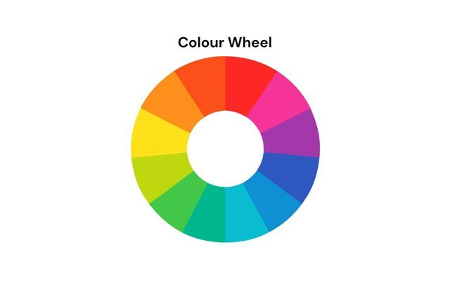
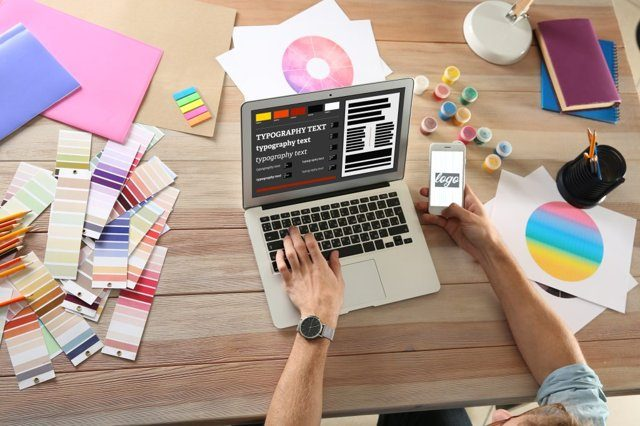
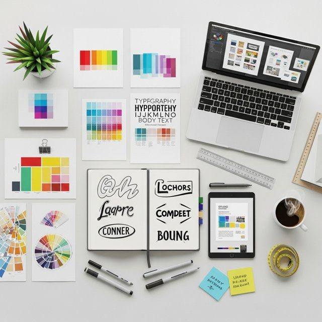

Short answer: Good design starts with three fundamentals — colour, typography and layout — before any advanced tool. Canva, Figma and Adobe Express can all make clean designs, but none of them can decide what should stand out or which colours belong together. This guide teaches those fundamentals in plain language so your designs stop looking messy.
Learn graphic design fundamentals in plain language: how to choose colours, use typography clearly, and build clean layouts — before worrying about advanced tools.

Many beginners open a design tool, pick a bright template, and wonder why the result still looks messy. The problem is rarely the tool. Canva, Figma, and Adobe Express can all make clean designs, but none of them can decide what should stand out, which colours belong together, or where the eye should go first. Those decisions come from design fundamentals. When you understand colour, typography, and layout, even a simple poster made with free tools can look confident and professional. When you skip them, even expensive software cannot save a cluttered design. This guide explains the three fundamentals in plain language.
Colour is often the first thing people notice, and the easiest thing to overdo. Beginners commonly use five or six strong colours at once, which makes a design feel noisy and hard to read. A safer starting point is a palette of three colours: one main colour, one supporting colour, and one accent colour for small highlights such as buttons or headings. Add neutrals like white, black, or grey for backgrounds and body text, and you already have enough variety. The colour wheel is a helpful reference. Colours opposite each other, such as blue and orange, create strong contrast, while colours next to each other, such as blue and teal, feel calmer. Neither choice is better in every case. A bold contrast suits a sale poster, while a calm palette suits a health or education brand. Always ask what feeling this design should create, and whether the colour supports it.

Typography means the way text looks in a design: the fonts you choose, their sizes, spacing, and arrangement. Beginners often choose a decorative font because it looks interesting, then discover it is difficult to read in a paragraph. A useful rule is to use no more than two font families in one design: one for headings and one for body text. The heading font can have more personality, while the body font should be clear and comfortable to read, even in small sizes. Pairing a bold heading font with a clean body font is a safe starting point.
Hierarchy is the second typography skill to learn. It means showing the reader what to read first, second, and third. A large, bold headline should come first, a smaller subheading second, and regular body text third. If everything is the same size and weight, the reader has nowhere to start. Use size, weight, and spacing to create that order, not colour alone. Also give text room to breathe. Lines that are too long or too tight feel tiring to read. A little extra space between lines and around paragraphs makes the whole design feel more polished, even if nothing else changes.
Layout is the arrangement of everything on the page: text, images, shapes, and empty space. Good layout feels invisible because the reader moves through it naturally. Bad layout feels confusing because elements compete for attention. Start with alignment. When edges line up, a design instantly looks more organised. When every element sits at a slightly different position, it looks accidental. Most tools, including Canva and Figma, offer guides and alignment buttons. Use them, and align related items to the same edge or centre line.
White space, the empty area around elements, is just as important as the elements themselves. Beginners often fill every corner because empty space feels wasted. In practice, white space helps the important parts stand out and makes a design easier to scan. Group related items close together and leave clear gaps between different groups. A heading belongs with its paragraph, a price belongs with its product, and a button belongs near the action it describes. Finally, decide on one main focal point per design. If a headline, an image, and a button are all huge, none of them wins. Choose one hero element and let the rest support it.

You do not need a long course to practise these fundamentals. Pick one small project each week, such as a social media post or a simple flyer, and focus on only one fundamental at a time. One week, limit yourself to three colours and check your contrast. The next week, use only two fonts and build a clear headline, subheading, and body hierarchy. The following week, practise alignment and white space by studying a clean design you admire and noting its spacing and structure. Save designs you like in a folder and ask what makes them work: is it the colour, the type, or the layout? Over time, you will spot these choices automatically, and your work will improve faster than it would from learning new tool features alone.
Either is fine for beginners. Learn colour, typography, and layout first, because those skills transfer when you switch tools.
Start with three: a main colour, a supporting colour, and an accent colour, plus neutrals such as white, black, or grey.
Align the elements, remove an extra colour or font, and add white space around the most important part.